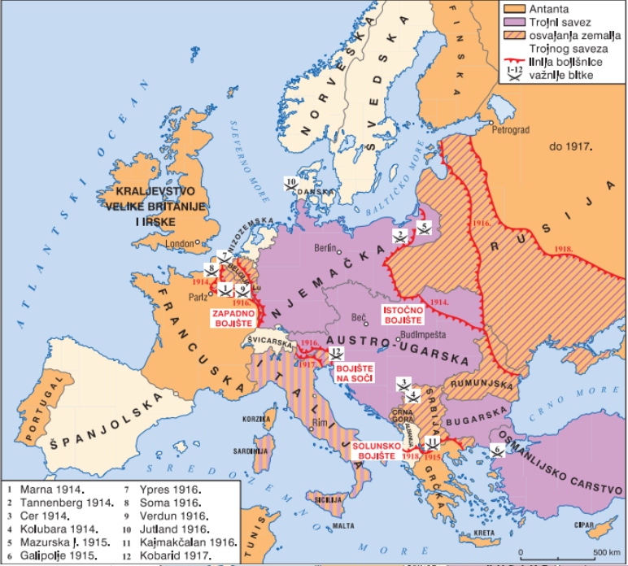

Gledano iz današnje perspektive uvjeti rada i života stanovnika u gradovima sredinom 19. stoljeća bili su strašni. Ali krajnje siromaštvo i gradska prljavština nisu bili isključivo rezultat industrijske revolucije. U 19. stoljeću pratimo dva trenda: porast broja Europljana (sa 188 milijuna 1800. godine na 401 milijun 1900. godine) i sve veći udio gradskog stanovništva. Poseban slučaj je bila Velika Britanija, gdje je većina stanovništva nastavila živjeti na selu, čak i u drugoj polovici 19. stoljeća, ali su veliki gradovi, čiji se broj stanovnika neprestano povećavao, počeli dominirati društvenim i političkim životom. Ovo je posebno naglašeno u procesu metropolizacije – stvaranja glavnih gradova kao središta kakva su danas. Mala manufakturna i trgovačka središta postala su industrijalizacijom veliki moderni gradovi. U Europi su 1800. godine bila 22 grada s više od 100 000 stanovnika. Do 1895. taj se broj povećao na 120 gradova s ukupno 10 % stanovništva.
Svijet u I Svjetskom Ratu
Images
Image 1 Title
Europske su se države potkraj 19. stoljeća i početkom 20.st. podijelile u dva suprotstavljena saveza. Države Antante (Rusija, Velika Britanija i Francuska) bile su zadovoljne brojem kolonija te svojim gospodarskim i političkim utjecajem u svijetu, dok su države Trojnog saveza (Njemačka, Austro-Ugarska i Italija) držale da kao europske gospodarske i političke velesile ostvaruju pravo na više kolonija nego što su ih posjedovale. Problem je bio u tome što su europske države različitom brzinom razvijale. Engleska i Francuska su se razvile ranije i zauzele sav pogodan prostor za osvajanje novih kolonija. Njemačka i njezine saveznice tražile su preraspodjelu kolonija i širenje svojih interesnih sfera kako bi od toga – baš kao Velika Britanija i Francuska – ostvarile gospodarsku i političku korist. Povod ratu bio je atentat na prijestolonasljednika A_U. Franju Ferdinand 28. lipnja 1914. u Sarajevu kojeg je počinio pripadnik tajne organizacije Mlada Bosna koji se zvao Gavrilo Princip. Austro-Ugarska je sumnjala u umiješanost Kraljevine Srbije u organizaciju atentata te joj je uputila ultimatum u kojemu je zatražila da austrougarska policija provede istragu na srpskom teritoriju. Srbija je to odbila s obrazloženjem da jedino srpska policija može provoditi istragu na području Srbije. Krajem srpnja 1914. Austro-Ugarska je objavila rat Srbiji.
Images

Image 1 Title
1914. Krajem srpnja 1914. Austro-Ugarska je objavila rat Srbiji. Rusija je objavila rat Austro-Ugarskoj, a Njemačka rat Rusiji, a potom i njezinoj saveznici Francuskoj. Njemačka je vojska početkom kolovoza zauzela Belgiju, premda je ta država dan prije njemačkoga napada proglasila neutralnost. Povreda belgijske neutralnosti poslužila je Velikoj Britaniji, trećoj velikoj članici Antante, kao razlog da objavi rat Njemačkoj. Tako je ubrzo lokalni sukob zbog sustava savezništava prerastao najprije u veliki europski, a budući da se ratovalo i u kolonijama i u svjetski rat. Bojišta: Na balkanskom bojištu austrougarska vojska još je krajem srpnja 1914. započela s granatiranjem Beograda, a polovicom idućeg mjeseca izvela invaziju na Srbiju. Srpska je vojska pružala žestok otpor, a gubitci su bili veliki na obje strane. Velike bitke su se odigrale na Kolubari i Ceru. Na zapadnom bojištu Nijemci došli gotovo pred vrata Pariza. Tamo ih je, u Bitci kod rijeke Marne, zaustavila francuska vojska. Na istočnom bojištu Nijemci su 1914. velikom pobjedom u bitci kod Tannenberga, potisnuli rusku vojsku s područja današnje Poljske, a ni u kasnijoj fazi ratovanja ruske snage nisu bilježile veće uspjehe, nego su jedva i s promjenjivim uspjehom branile ruski teritorij. (SLIKA 1) 1915. U svibnju 1915. u rat je ušla i Italija, ali ne na strani Trojnog saveza, kojemu je pripadala godinama, nego na strani Antante. Razlog toj promjeni bio je Londonski ugovor koji je Italija neposredno prije stupanja u rat potpisala sa silama Antante. Tim je ugovorom Antanta obećala Italiji teritorije koji su tada pripadali Austro-Ugarskoj: Trst, Južni Tirol, Istru, veći dio Dalmacije, Albaniju pod uvjetom da otvori novo bojište u dolini rijeke Soče, Od ostalih događaja treba spomenuti da su se snage Antante iskrcale na poluotoku Galipolje, uz Dardanelski tjesnac. Akcija je bila loše planirana, zapovjednici Antante nisu dobro poznavali teren niti su očekivali žestok otpor osmanske vojske. Japan je ušao u rat na strani Antante. U rujnu 1915. u rat na strani Trojnog saveza je ušla Bugarska (nakon čega dotadašnje države Trojnog saveza usvajaju naziv Centralne sile). Uz pomoć njemačke vojske Austro-Ugarska je uspjela poraziti srpsku vojsku, koja se s velikim gubitcima, uspjela povući preko Albanije do otoka Krfa. 1916. Vojnici na bojištima vrlo su brzo mogli uočiti činjenicu da se taj rat razlikuje od prijašnjih. To je posebno bilo izraženo na Zapadnomu bojištu, gdje su vojnici godine i godine proveli ukopani u rovove. Takva vrsta ratovanja naziva se pozicijskim ratom. U bitci kod Verduna 1916. godine poginulo je na obje strane oko 700 000 vojnika. Sličan je bio i rezultat bitke kod rijeke Somme iste godine, kao i kasnijih pokušaja proboja s obje strane. Uza sve to, pojavilo se novo, strašno oružje: bojni otrovi, tenkovi, zrakoplovi i podmornice koje su torpedima nemilice potapale neprijateljske brodove. Najveća pomorska bitka odigrala se kod poluotoka Jitlanda. Najrazvijeniju podmorničku flotu imala je Njemačka koja se njome masovno služila u ratu na Atlantskom oceanu gdje su napadale i civilne brodove koji su prevozili robu državama Antante. 1917. Ratna su zbivanja posebno teško pogodila Rusiju. Uz česte poraze u bitkama i gubitak teritorija te brojne poginule i ranjene, stanovništvo Rusije bilo je pogođeno siromaštvom i glađu. Zbog toga u Rusiji 1917. izbijaju dvije revolucije nakon kojih ona najavljuje izlazak iz rata. Zbog poremećenog odnosa snaga u rat se uključuju SAD. Njemačke su podmornice u ratnomu djelovanju potapale i brodove neutralnih država koji su prevozili robu za države Antante. Iz tog je razloga potopljeno više američkih brodova među kojima je bila i Luisitanija prilikom kojega je poginulo više od tisuću putnika. Povod američkom ulasku u rat u travnju 1917. bili su pregovori Njemačke i Meksika koji su trebali rezultirati meksičkim pristajanjem uz ratne ciljeve Centralnih sila. 1918. Početkom 1918. Rusija je zbog unutarnjih problema bila prisiljena sklopiti mir s Centralnim silama. Dogodilo se to 3. ožujka 1918. u Brest Litovsku. Tijekom 1918. godine na Zapadno su bojište pristigli brojni američki vojnici. Njihova svježina i probojnost donijele su silama Antante pobjedu u ratu. Njemačka vojska povlačila se prema domovini bez većega otpora. Tome su bez sumnje pridonijela i zbivanja u Austro-Ugarskoj, koja je bila pred raspadom, ali i u samoj Njemačkoj gdje je car Vilim II. bio prisiljen odreći se vlasti. Nakon kapitulacije Austro-Ugarske, Bugarske i Osmanskog Carstva, uslijedila je kapitulacija Njemačke, 11. studenog 1918. čime je završio Prvi svjetski rat.
Images
Image 1 Title
U Prvomu svjetskom ratu nestala su četiri carstva: Rusko, Tursko, Njemačko i Austro ugarsko, a na njihovom teritoriju nastale brojne nove države. Poginulo je približno 10 milijuna ljudi, dok je 20 milijuna ranjeno. Španjolska gripa na kraju rata i neposredno nakon njega odnijela je još 50 milijuna života. Osnovana je Liga naroda. Ta je međunarodna organizacija država trebala izgraditi svjetski sustav sigurnosti i posredovati u međudržavnim sporovima.